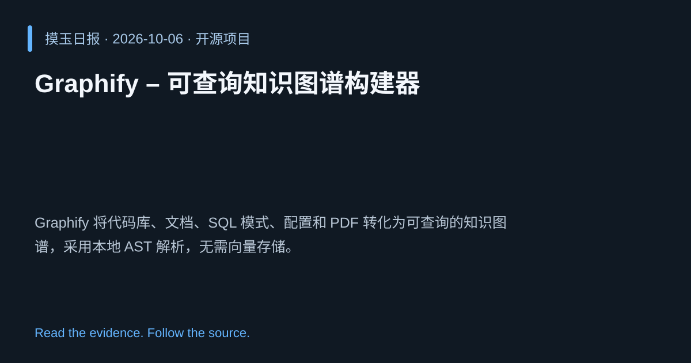

2026-10-06 · Asia/Shanghai · 开源项目 · #16
Graphify – 可查询知识图谱构建器
Graphify-Labs/graphify
Graphify 将代码库、文档、SQL 模式、配置和 PDF 转化为可查询的知识图谱，采用本地 AST 解析，无需向量存储。
为什么值得关注
实现跨文档、跨代码的结构化查询，提升检索效率，契合知识图谱发展趋势。

热度 20.0 / 100；排名与评分保留该期记录。
2026-10-06 · Asia/Shanghai · 开源项目 · #16
Graphify-Labs/graphify
Graphify 将代码库、文档、SQL 模式、配置和 PDF 转化为可查询的知识图谱，采用本地 AST 解析，无需向量存储。
实现跨文档、跨代码的结构化查询，提升检索效率，契合知识图谱发展趋势。

热度 20.0 / 100；排名与评分保留该期记录。